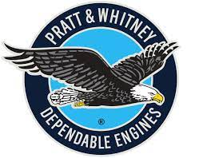

About Me
I am a computational researcher and PhD candidate at the University of Chicago, focused on applying machine learning to biomolecular and physical simulations. My work centers on developing generative models to expand the spatial and temporal resolution of molecular systems across atomistic and coarse-grained representations.
Published PhD Research
Internships
Pratt & Whitney — Chemical Data Systems (2018)

Projects
- Exploring Chicago via Google Timeline Map
- CTA Bus Tracking Map
- 60-mile Bike Ride Tracking Video
- Drone Compilation Video